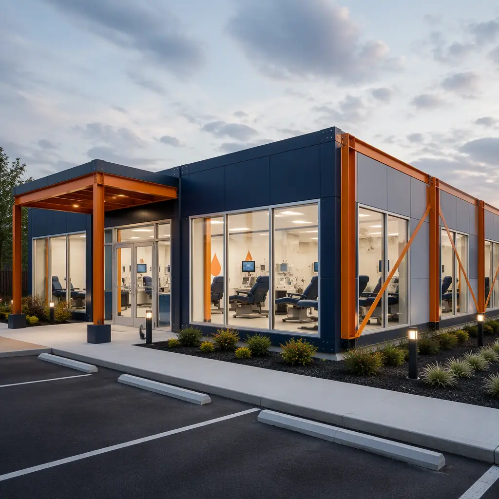
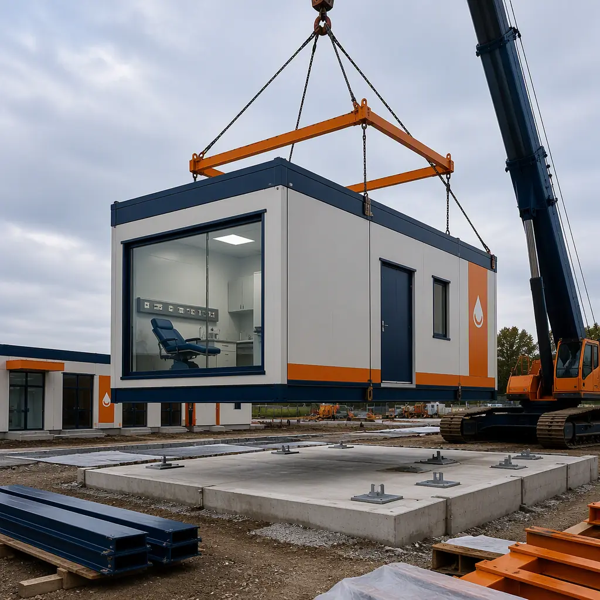
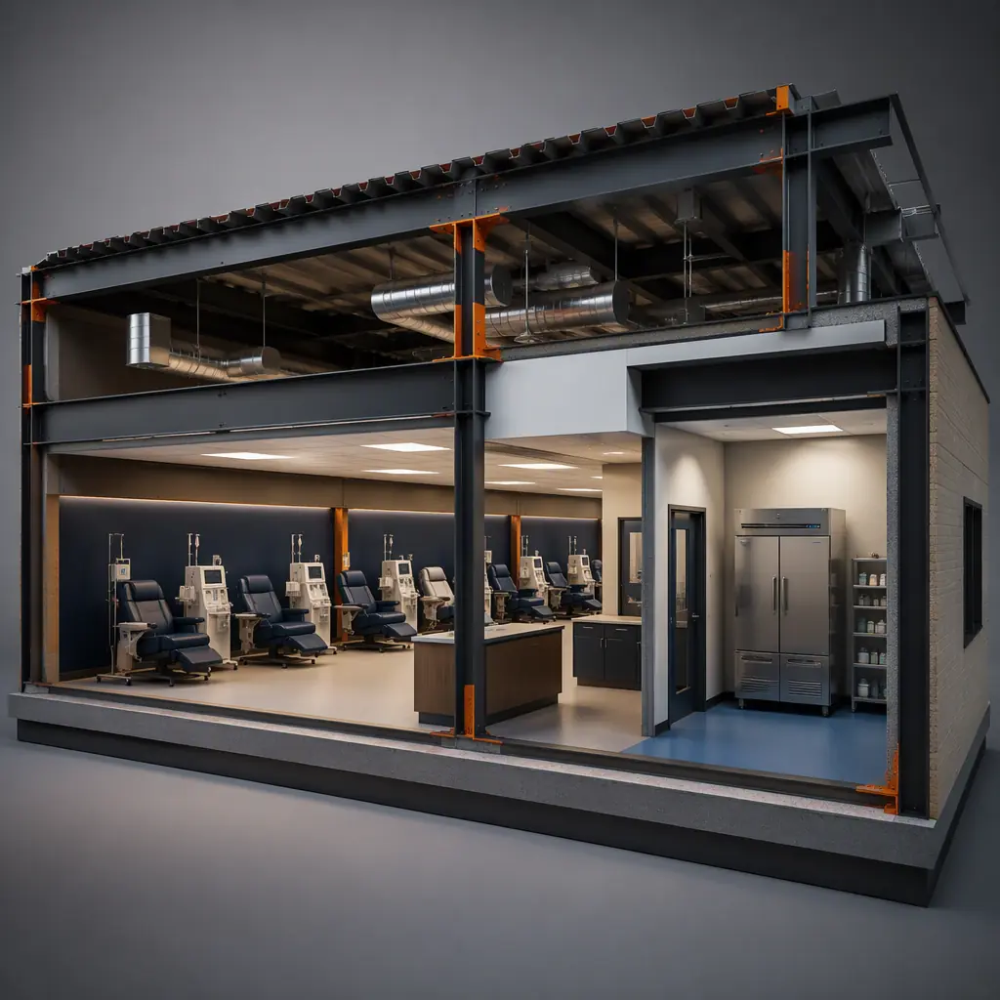
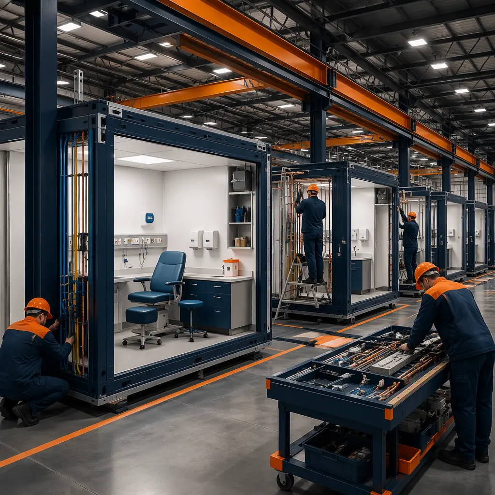

Plasma collection is one of the most standardized building programs in healthcare — and one of the fastest growing. The United States alone operates more than 1,100 FDA-licensed plasma collection centers, and the major networks — CSL Plasma, Grifols, Octapharma and BioLife — open new centers continuously to meet demand for fractionated therapies. Every one of those centers repeats the same core program: a reception and registration area, private health-screening rooms, a donation floor lined with phlebotomy chairs and plasmapheresis machines, cold storage for collected product, and a small testing laboratory. The repetition is precisely what makes the building type ideal for modular prefabricated construction: a steel-frame donor center is factory-built while the site is being prepared, then installed and commissioned in weeks rather than the 14–20 months a conventional medical build consumes. A 30-chair collection center of roughly 12,000 sq ft can be delivered in 26–34 weeks from design freeze — matching the network-rollout economics we document for modular franchise and chain rollout construction and the clinical program logic of modular outpatient medical clinics. This guide covers donor-flow planning, the donation floor, cold chain and laboratory support, HVAC and infection control, FDA and AABB compliance in factory construction, cost structure, and the multi-center rollout path.

Why Plasma Collection Is a Repeatable Modular Program
The plasma industry's expansion model is built on repeatable design. A network operator selects a center prototype, adapts it to a leased retail site, and replicates it across cities — the same donor flow, the same chair count, the same equipment package. Because the program repeats, the design can be frozen once and manufactured many times: wall panels, MEP racks, phlebotomy stations and cold rooms become standardized components produced on a factory line rather than framed in the field. That repeatability drives three advantages specific to plasma:
- Speed to revenue. A plasma center earns from its first collection day. Factory production compresses the delivery from 14–20 months to 26–34 weeks, which for a center collecting 400–800 donations per week can mean millions in earlier product revenue.
- Consistent regulatory documentation. FDA licensing under 21 CFR 606 evaluates the facility as much as the process. Factory-built centers carry a complete material and assembly documentation trail — the same discipline we detail for modular factory QC systems — which accelerates license inspection across a whole network.
- Lease-driven timelines. Plasma centers usually occupy leased retail space on a fixed opening date. The compressed, schedule-certain delivery of modular construction protects that date — the timeline logic we document in modular construction scheduling.
Donor Flow Drives the Floor Plan
Every FDA-licensed center follows the same donor pathway, and the floor plan exists to serve it: donors arrive, register, undergo a confidential health screening and physical exam, donate on the collection floor, then rest and refresh before leaving. The regulated sequence dictates the space program:
- Reception and registration — typically 400–600 sq ft with a check-in counter, waiting seating for 15–25 donors, and a queue that never blocks the exit path.
- Private screening rooms — one per 8–10 chairs, each 60–80 sq ft with a desk, exam table and computer station for the confidential health questionnaire and vital-signs check.
- The donation floor — the heart of the center, laid out with phlebotomy chairs spaced 6–8 ft apart so staff can monitor multiple donors.
- Post-donation refreshment area — 300–500 sq ft with seating and vending, where donors must stay 10–15 minutes under observation.
Because the pathway is fixed, the modules can be arranged to enforce it: screening modules buffer the donation floor from the public entrance, and one-way circulation prevents a donor from walking back through active collection. The clinic-planning approach follows the same patient-flow discipline we document for modular dialysis centers and modular diagnostic imaging centers.

The Donation Floor — Chairs, Machines & Medical Gases
The donation floor is the densest MEP environment in the building. A 30-chair center houses 30 plasmapheresis machines, each drawing roughly 8 amps at 120V, plus per-chair data drops for donor records and machine networking. Each chair station needs 60–80 sq ft of clear floor, an armrest workstation for the machine, and proximity to hand-washing stations — typically one per four chairs. Medical gases are limited compared with a hospital, but emergency oxygen outlets and suction at coded stations are required by most state licensure frameworks, and the floor must carry the raceways for them. The MEP density of the donation floor follows the same factory-prefabrication discipline we document for modular HVAC and indoor air quality: service runs are built into the module walls and ceiling void, tested in the factory, and connected on site with a handful of utility tie-ins.
Cold Chain & Laboratory Support
Collected plasma is a regulated biologic with a tight cold chain. FDA regulations require plasma to be frozen within 24 hours of collection (within 8 hours for certain products), and stored at −30°C or colder until fractionation. The center therefore needs a walk-in plasma freezer — typically 200–400 sq ft — with redundant refrigeration, temperature monitoring and alarm, and backup power. Whole-blood centers add 1–6°C blood refrigerators and room-temperature platelet agitators. The on-site testing lab, usually 300–500 sq ft, runs CLIA-waived tests and holds samples pending shipment; some networks co-locate a full CLIA moderate-complexity lab. These cold rooms are factory-fabricated as insulated modules with refrigeration plant, monitoring and alarms installed — the same precision-environment approach we document for modular pharmaceutical and GMP facilities and modular clean rooms. Backup power is not optional: a freezer failure destroys product and triggers a reportable event, so centers carry automatic transfer switches and generator provisions sized for the cold chain plus the donation floor.

HVAC, Infection Control & Medical-Grade MEP
A plasma center is a medical facility with a public stream of up to several hundred donors a day, so HVAC and infection control follow healthcare rather than commercial standards. The donation floor is maintained under positive pressure relative to corridors, with supply air filtered to MERV-13 or better and air changes per hour in the 8–12 range; screening rooms and the lab follow similar or higher standards. Hand-washing sinks at coded locations, antimicrobial floor finishes, and cleanable wall surfaces throughout the donor path support the facility's infection-control plan under CDC and state guidance. Because the modules are fabricated indoors, the finishes and filtration are installed and verified in a controlled environment — and the pressure relationships can be tested before the building ever reaches the site. The commissioning discipline for these systems is covered in our modular building commissioning and handover guide.
FDA, AABB & State Compliance in Factory Construction
Plasma centers are licensed by the FDA under 21 CFR 606 (current good manufacturing practice for blood and blood components), inspected against AABB standards, and regulated by the state in which they operate. Facility compliance touches construction directly: surfaces must be cleanable, the donor path must enforce separation between donors and collected product, cold storage must be validated, and emergency systems must be documented. Factory construction supports each requirement systematically. Materials carry certification trails from installation; welds, seals and finishes are documented as they are applied; and the cold room's validation — temperature mapping, alarm testing, power-fail simulation — can be completed before shipment. The result is a compliance dossier that shortens the license-inspection cycle, because the inspector reviews documented factory records rather than field improvisation. Operators opening multi-center networks extend the same dossier across every location — the program-level consistency we describe in our modular RFP procurement guide for regulated facilities.
Commissioning, Validation & the Opening Sequence
The path from module arrival to first donor follows a sequence that modular delivery compresses without cutting steps. Foundations and utility connections are prepared while the factory finishes the building; the modules arrive and are set in two to four weeks; then the facility is tied in, the cold rooms are validated, and the license inspection is scheduled. Because the modules arrive factory-commissioned — MEP systems tested, pressure relationships verified, cold storage temperature-mapped — the on-site validation window shrinks to utility tie-ins, final testing and regulatory inspection. Many operators overlap staff training with the final weeks, so the center becomes license-ready and staff-ready on the same day. The sequencing discipline follows our modular construction project timeline guide, and the site preparation standards are covered in modular foundation systems. For a network, the same sequence repeats at every location with the same documentation — which is why a factory-built prototype can be licensed, opened, and replicated in roughly half the calendar time of a conventional center, and why the schedule risk that dominates traditional medical construction is engineered out of the process before the first module ships.
Cost Structure — Modular vs. Conventional Center
| Center Program | Conventional | Modular |
|---|---|---|
| Satellite center, 18 chairs (8,000 sq ft) | $3.6–5.2M / 12–16 months | $2.9–4.2M / 22–28 weeks |
| Full center, 30 chairs (12,000 sq ft) | $5.2–7.5M / 14–20 months | $4.2–6.0M / 26–34 weeks |
| Walk-in plasma freezer + cold chain (validated) | $180–280K field-built | $140–220K factory-built, pre-validated |
| Revenue lost during construction (est.) | $1.2–2.0M at 500 donations/week | $0.5–0.9M at 500 donations/week |
The 15–20% capital saving is secondary to the schedule saving: each month a center opens early adds roughly $200–350K in collection revenue at typical utilization. For the full cost methodology, see our 2026 modular construction cost guide.

Network Rollout & Site Selection
For operators opening five, twenty or fifty centers, the prototype is the product. Once the design is frozen and the first centers are licensed, the factory can produce identical modules for every subsequent location — the same building delivered to different leased sites with only foundation and utility variations. This is the same repeatable-model economics we document for modular bank branch and credit union construction and franchise-style rollouts. Site selection favors ground-floor retail space with parking and a 30–40 ft crane access path; the modules are set through a temporary roof opening or an open end wall, connected to power, water and sewer, and commissioned within two to four weeks on site. Lease negotiations also benefit from the modular schedule: an operator can commit to a lease start date with confidence, because the delivery window is contractual rather than aspirational — a material advantage in competitive retail real estate where the best sites turn over quickly. For operators who prefer turnkey delivery, the entire program — design, factory production, site work, installation and validation — is managed under one contract, and the long-term cost picture is covered in our modular building lifecycle cost guide.
Is Modular Right for Your Donor Center?
Modular plasma delivery creates the strongest value for network rollouts where the same center prototype repeats across cities, lease-driven openings with fixed dates that conventional construction cannot meet, centers on constrained retail sites where factory production minimizes site disruption, and operators who want a documented, inspection-ready facility from day one. For single-center operators, the compressed schedule still pays for itself through earlier collection revenue. If you are planning a center or a network, the donor-flow, cold-chain and compliance engineering we apply to every MODURA healthcare project — the same discipline documented across our modular healthcare construction series — is available from the first concept meeting.
Planning a plasma center or multi-center rollout? Request our healthcare facility documentation package — donor-floor module specifications, FDA 21 CFR 606 compliance support, cold-chain validation data and schedule case studies. Contact the MODURA engineering team.